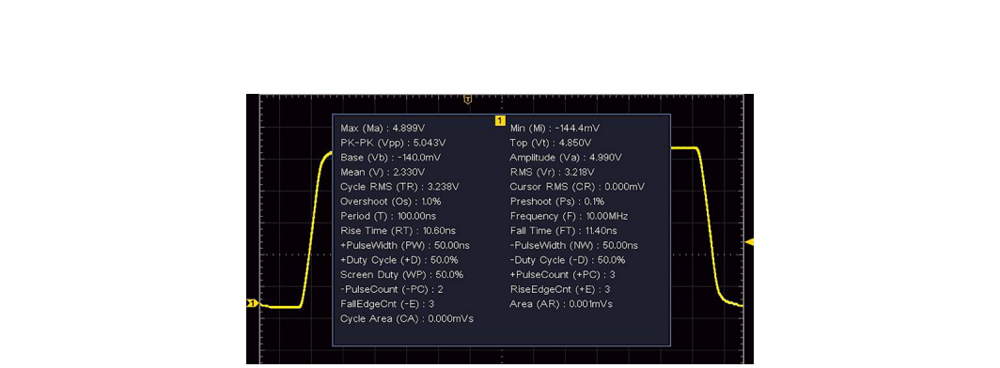
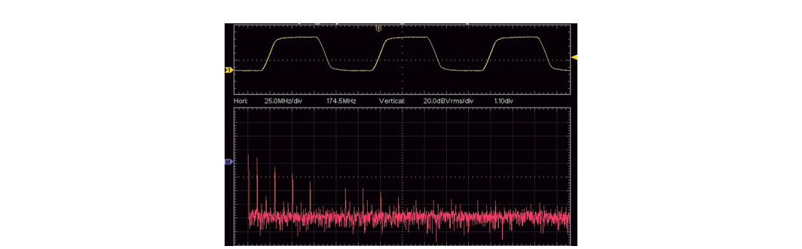
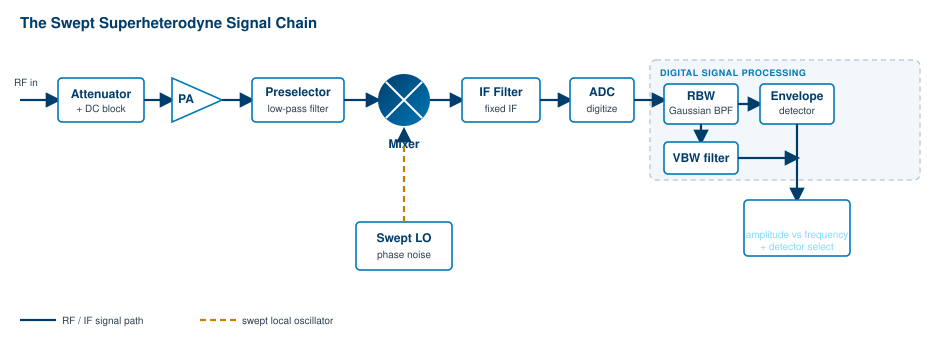
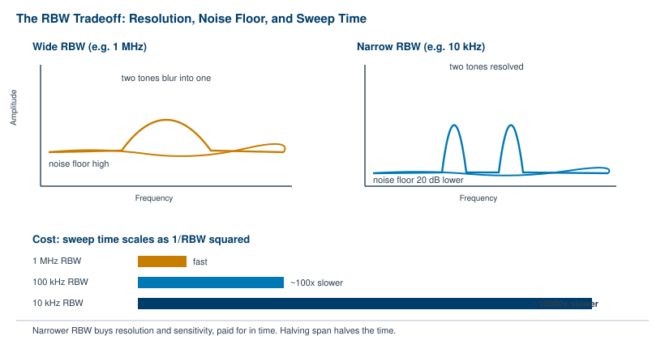

If Chapter 3 explained what lives in the electromagnetic spectrum, this chapter explains the instrument that lets you see it. The swept superheterodyne spectrum analyzer is the workhorse of RF measurement. It is the tool engineers reach for when they need to know what frequencies are present in a signal, how strong each one is, and whether anything is hiding in the noise. Decades after its core architecture was settled, it remains the most common spectrum analyzer design in use, and understanding how it works stage by stage is one of the most useful things an RF practitioner can learn.
This chapter starts with the simpler instruments most engineers already know, then builds up to the superheterodyne receiver at the heart of the analyzer. We walk the full signal chain, one circuit element at a time, from the RF connector to the trace on the screen. Along the way we cover the two settings that dominate every measurement you will ever make with one of these instruments: resolution bandwidth and sweep time.
Before reaching for a spectrum analyzer, it helps to understand the instruments that came before it and why they fall short for fine frequency work.
The original oscilloscopes were strictly analog. They used a cathode ray tube (CRT) as a display, much like the early television sets of the same era. The scope would "draw" the incoming signal directly on the screen by steering an electron beam. This was enormously helpful for visualizing a waveform in the time domain, but it had two real limits. Direct measurement was difficult, since the operator had to read values off a graticule by eye, and the data could only be saved by photographing the display.
The arrival of digital technology changed both limits at once. Once the raw voltage and time data are digitized, they can be stored, recalled, and processed directly inside the instrument. Modern digital oscilloscopes calculate rise time and fall time, frequency, period, duty cycle, pulse width, and voltage amplitude automatically, and they do it on every acquisition. The measurement that once took a careful hand and a Polaroid now happens in milliseconds.
Going Deeper - How engineers stored a waveform in 1975
In the 1970s, capturing a transient for later study was a physical act. Companies kept Polaroid cameras fitted with special hoods that clamped onto the scope bezel, sealing out room light so the operator could photograph the glowing trace. The picture was the record. There was no file, no recall, and no way to re-measure the same event later. Digitization did not just add convenience. It changed what kinds of analysis were possible at all.

Some digital scopes can also display amplitude versus frequency by running a fast Fourier transform (FFT) on the captured time-domain data. The FFT function is useful for identifying a fundamental frequency and seeing the rough harmonic content of a signal, as shown in the next figure.

So a scope gives you two views. In the time domain it shows phase and shape, the actual rise and fall of the waveform. In the frequency domain, by way of the FFT, it gives you basic amplitude and frequency information. For a lot of bench work, that is enough.
For careful frequency work, though, the oscilloscope runs into trouble. The first problem is the noise floor. Oscilloscopes carry a noise floor that is much higher than dedicated frequency instruments like spectrum analyzers. That makes small-amplitude features, such as higher-order harmonics or low-level spurs, hard or impossible to see. They simply sink below the grass.
The second problem is bandwidth. Oscilloscopes are wideband instruments by design. They detect a broad range of frequencies all at once, which is exactly what you want for capturing a fast edge but exactly what you do not want for separating two tones that sit close together. Looking at everything at once raises the effective noise floor and offers no clean way to distinguish signals whose frequencies are near each other. To pull a weak signal out of the noise, and to tell two nearby signals apart, you need an instrument built for the frequency domain from the start.
Spectrum analyzers come in two broad families, and it is worth placing the swept design in context before we open it up.
Real-time spectrum analyzers are conceptually close to oscilloscopes. They first collect data in the time domain, then compute the frequency content using FFT algorithms. By capturing a large block of samples across a broad frequency range, they can calculate amplitude versus frequency and refresh the display very quickly. They differ from scopes in two important ways. They tend to offer lower noise floors, and they include specialized filtering that can separate signals which sit close together.
That speed makes real-time analyzers very good at one thing in particular: catching signals that change quickly. Frequency-hopping radios, short bursts, transient interference, and the agile waveforms common in modern digital communications all favor a real-time approach, because a real-time analyzer can capture a brief event that a swept instrument would sweep right past.
Going Deeper - The price of speed
Compared to swept analyzers, real-time systems capture transients and fast signals far better. That capability is not free. For a given price point, a real-time analyzer typically carries a higher noise floor and a higher unit cost than a comparable swept instrument. Chapter 5 covers the real-time FFT architecture in depth. For most steady-state measurements, the swept design still wins on noise performance and value, which is a large part of why it remains so common.
Real-time systems are gaining ground, but in the installed base they are still outnumbered by swept analyzers by a wide margin. The swept superheterodyne design is the one most engineers will use most often, so it is the one we open up next.
Spectrum analyzers built on the swept superheterodyne design are popular for three connected reasons: low noise, ease of use, and the ability to separate signals that sit at very close frequencies. In broad terms, the swept superheterodyne receiver is almost identical to an ordinary radio receiver. Both can be set to a frequency range, both filter out everything outside that range (the way you tune in one station and reject the others), and both then observe the signal that gets through.
The difference is in how they tune. A radio is set to one fixed frequency and feeds the result to a speaker. An analyzer is never parked on a single frequency. It sweeps across a band in steps, the way you might walk a radio dial from one end to the other, and instead of playing the result through a speaker it draws the signal amplitude on a display.
Going Deeper - Where the name comes from
"Superheterodyne" is short for "supersonic heterodyne." US engineer Edwin Armstrong developed the architecture in 1918, near the end of the First World War. "Supersonic" here refers to frequencies above the range of human hearing (roughly 31 Hz to 21 kHz, in the convention of the time). "Heterodyne" combines the Greek roots hetero-, meaning different, and -dyne, meaning power or force. The name describes the central trick of the design: mixing two different frequencies to produce a new one that is easier to work with.
The swept superheterodyne analyzer takes an unknown signal, the input or RFin, and mixes it with a sweeping signal from a swept local oscillator (LO) to create a combined signal. The LO is swept from a start frequency to a stop frequency in discrete steps. Each step defines a frequency "bin" on the display. At each bin, the analyzer measures the power present. If the unknown signal has a frequency component that falls inside the bin, the display plots a point at the matching amplitude. When the sweep finishes, the trace on the screen represents one complete scan across the span set by the start and stop frequencies.
That is the whole idea in one paragraph. The rest of the chapter explains how each circuit element contributes to producing that trace.

A signal entering the RF connector passes through a chain of stages, each with a specific job. We follow that chain in order. The block diagram above is your map: keep it in view as we walk through the eleven stages, from the attenuator at the front to the video bandwidth filter that smooths the trace at the end.
The input RF signal connects to the RF input of the analyzer and immediately enters the attenuator. The attenuator's job is to reduce the power delivered to the circuit elements that follow, which protects them from damage. A strong input that is fine for a power meter can overload and destroy a sensitive front end, so the attenuator stands guard at the door.
The attenuator does more than protect hardware. By holding input power in a sensible range, it reduces spurious emissions (often called spurs) and the modulation effects that an overdriven mixer would otherwise generate. Many analyzers include an integrated attenuator that the operator controls directly from the instrument settings. External attenuators, fixed or variable, can also be added in front of the input when extra headroom is needed.
The input circuit usually includes a DC block as well. This element strips out any DC component on the input, since a DC offset riding on the RF can overload or damage the stages downstream.
The preamplifier, or PA, is a low-noise amplifier that boosts the input signal's amplitude. By raising the signal before the noisier stages that follow, it improves the signal-to-noise ratio and increases the instrument's sensitivity to low-power features in the input. Like the attenuator, the preamp is usually under the analyzer's control, switched in when you are hunting for weak signals and switched out when the input is already strong.
There is a balance to strike here. A small adjustable attenuator often sits ahead of the preamp specifically to keep the signal within the preamp's input dynamic range. Too much signal and the preamp compresses or distorts. Too little and weak features stay buried. The attenuator and preamp work as a pair to land the signal in the sweet spot.
The preselector is a filter that allows only certain frequencies to reach the stages beyond it. By rejecting or limiting unwanted signals such as harmonics and spurs, it prevents them from creating false readings later in the chain. Not every analyzer includes one. A preselector adds cost and complexity, and a low-cost design may leave it out, but its presence lowers the chance of false peaks appearing in the displayed spectrum.
The benefit is easy to demonstrate. Picture a 1 GHz RF signal with a peak power around +4.2 dBm, accompanied by a third harmonic near -6.4 dBm. The difference between the fundamental and the harmonic is only about 10 dB, close enough that the harmonic could be mistaken for a real, separate signal. Add a simple first-order low-pass filter and the third harmonic drops sharply relative to the fundamental, widening the gap to more than 18 dB. A second- or third-order filter rejects the harmonic harder still. The preselector cleans up the picture before the analyzer ever tries to interpret it.
There is also a low-pass filter that enforces the instrument's maximum operating frequency, keeping any energy above that limit from entering the circuit where it would be harder to remove. Together with the DC block mentioned earlier, these front-end filters define the clean window of frequencies the analyzer actually acts on.
The mixer is the heart of the superheterodyne design. It is a three-port device that takes two input signals and produces an output that combines them. In this architecture, the mixer multiplies the unknown input signal, at frequency fsig, with the known local oscillator signal, at frequency fLO.
That multiplication does not just pass the two signals through. The output contains the original RF signal (fsig), the local oscillator signal (fLO), and crucially the sum and difference of the two: fLO + fsig and fLO - fsig. It also contains sums and differences of higher harmonics, such as 2fLO - fsig and 2fLO + fsig, which are usually ignored for clarity when first learning the design. The sum and difference products are the ones we care about. Each is called an intermediate frequency, or IF.
Tech Note - The intermediate frequency
The output frequency produced by the mixer is called the intermediate frequency (IF). The whole point of the superheterodyne design is to shift the unknown signal to this fixed, convenient IF where it can be filtered and measured precisely.
A worked example makes the arithmetic concrete. Suppose RFin is 10 MHz and the LO is 2 GHz. The downconverted (difference) IF is:
IFdown = fLO - fRF = (2 x 109 Hz) - (10 x 106 Hz) = 1.99 x 109 Hz = 1.99 GHz
The upconverted (sum) IF is:
IFup = fLO + fRF = (2 x 109 Hz) + (10 x 106 Hz) = 2.01 x 109 Hz = 2.01 GHz
In practice, an analyzer may use several mixer stages in series to balance frequency resolution against operating range. The tension is fundamental. Fine resolution demands narrow-bandwidth filters, but the instrument also needs to operate over a wide frequency range, and narrow band-pass filters do not work well across a broad span. Adding filters raises cost and complexity. The two requirements pull against each other.
Multiple IF stages resolve that tension. By adding stages, a design can maximize frequency resolution while still extending its operating range. Each stage can upconvert (step up) or downconvert (step down) the signal into a new range where a filter can cleanly remove unwanted products before handing the signal to the next stage. Cascading these conversions gives the instrument superior sensitivity, good frequency stability, and high frequency selectivity. The combined result is a wide operating range together with the ability to separate signals whose frequencies sit very close together.
The local oscillator is the swept signal that the mixer multiplies against the input. Its quality matters enormously, because any imperfection in the LO transfers directly onto every measurement. The most important imperfection is phase noise.
Phase noise effectively raises the noise floor near a signal. It can mask small signals that sit just off a strong input frequency, smearing energy outward from the carrier and covering up the very features you are trying to see. Low phase noise does the opposite. It keeps the skirts of a strong signal narrow, which lets you observe low-level signals near a measured input frequency. Picture a 100 MHz RF input traced in yellow, with the analyzer's own noise floor traced in purple at identical settings. Near the center frequency, the noise floor rises toward the carrier. That rise is phase noise, contributed by whichever source dominates, either the signal source or the analyzer.
Phase noise is minimized by choosing high-quality reference oscillator materials and by controlling the operating environment, particularly temperature. Several oscillator designs are used to keep it low:
Each climbs a rung in stability, and cost, over the one before it. An OCXO holds its crystal at a constant elevated temperature inside a small oven, which makes it the most stable of the three and a common choice where low phase noise is critical.
The IF filter sits immediately after the mixer. Its job is to keep one of the mixing products and reject the rest. It filters out fsig and fLO and leaves either the upconverted product (fLO + fsig) or the downconverted product (fLO - fsig), depending on the design.
Here is where the cleverness of the architecture becomes clear. Our original unknown signal has now been shifted by a known amount (fLO) to create the IF. Because we know the LO frequency exactly, we could apply a filter with a known center frequency and known bandwidth to the IF and measure what comes through. If the IF is not in that filter's range, we could step to a different filter with a different center frequency and check again. With enough filters, we could keep stepping through center frequencies until we found the IF, then subtract the LO frequency to recover the unknown fsig.
That brute-force approach works on paper, but building analog filter networks with enough range and performance to cover gigahertz of spectrum is difficult and expensive. Fully analog designs performed very well within their intended ranges, yet they carried real disadvantages in size, cost, and flexibility. Modern designs use a smarter strategy: a final IF stage with a fixed center frequency, and a swept LO. Rather than moving the filter to find the signal, the instrument moves the signal past a stationary filter. Sweeping the LO slides each input frequency, in turn, into the fixed IF filter's window. That single decision, fixed filter and swept oscillator, is what makes the whole instrument practical.
Early spectrum analyzers were analog from end to end, with an analog CRT for the readout. Wider operating ranges and narrower band-pass filters demanded ever more components, and the analog parts of the day were bulky, so a fully analog spectrum analyzer was typically large, heavy, and costly.
Today, many of the filters and processing blocks have been replaced by digital signal processors (DSPs) that faithfully model their analog counterparts. Moving into the digital domain simplified the design dramatically. A modern spectrum analyzer is often about the size of a few textbooks, and prices have fallen sharply. Some instruments are no larger than a pack of playing cards, including USB-controlled models that run from a laptop.
The ADC is the gateway to that digital world. After the mixer has converted the unknown signal to the IF, the IF signal is fed to an analog-to-digital converter, which produces a digital output proportional to the analog input. Once the signal is digital, we can manipulate it freely, applying mathematical algorithms to isolate the unknown signal with a precision that analog filters could not match.
BNC in Practice - Modern analyzer form factors
Berkeley Nucleonics builds spectrum analyzers across this range, from benchtop instruments to compact and portable units suited to field work. The shift from analog to digital signal processing is what made that range possible: the same measurement that once filled a rack now fits in a carry case. For exact frequency ranges, displayed average noise level, phase noise, and other specifications, consult the current datasheet for the specific model, since these figures are model-specific. Verify against current datasheet.
Following the ADC is the resolution bandwidth (RBW) filter. Its purpose is to isolate the IF and reject anything out of band. It may be implemented as the final stage of the IF filtering or further down the chain, depending on the design, but its role is the same: it sets how finely the analyzer can resolve frequency.
The RBW filter is a band-pass filter. It passes frequencies inside its envelope and rejects those outside. Most designs give it a Gaussian shape. A band-pass filter has a center frequency and a bandwidth, and by convention the bandwidth is specified at the 3 dB point, which corresponds to 50% of the filter's response. The 3 dB point is the amplitude at which the area under the curve is split in half: 50% lies above it and 50% below. The bandwidth is the frequency difference (f2 - f1) measured at that 3 dB point.
The Gaussian shape is chosen because it offers the best balance of phase linearity and selectivity. Selectivity measures how well a filter rejects signals near its operating range. Other shapes, such as a flat-top filter, have better selectivity and can reject out-of-band signals more precisely, but they pay for it with poor phase linearity, which causes effects like ringing that cannot be easily filtered back out. Gaussian filters are the popular default, although analog, digital, and hybrid filter types all appear in practice.
Digital filters can be designed with better selectivity than their analog equivalents, and they bring other advantages too. Many electromagnetic compatibility (EMC) tests, for instance, call for a 6 dB Gaussian filter. This filter's bandwidth is defined at the 6 dB point, where roughly 75% of the filter's area lies above the point. That wider definition gives a more desirable response to impulses and short bursts of RF, which are major contributors to electromagnetic interference (EMI). Being able to switch filter definitions in software, rather than swapping hardware, is one of the quiet benefits of the digital approach.
The effect of RBW on what you can see is dramatic. Imagine two signals separated by only 100 kHz, captured at three settings: a yellow trace at 1 MHz RBW, a purple trace at 100 kHz, and a light-blue trace at 10 kHz. At 1 MHz, the RBW is wider than the spacing between the signals, so they merge into a single bump. That rounded shape is the swept IF tracing out the envelope filter that follows the RBW filter, not two distinct peaks. Narrow the RBW to 100 kHz and then 10 kHz, and two things happen at once. Frequency resolution improves until the two signals separate into distinct peaks, and the noise floor drops. Both gains come from the same change.

Immediately after the RBW filter sits the envelope detector. It measures the voltage envelope of the time-based IF signal passing through.
The behavior depends on what the IF contains. If the IF is a single-frequency sine wave, the detector's output is a single DC voltage. That is the situation when the IF is just the LO with no mixing products present. If the IF instead contains multiple frequencies, which happens whenever mixing products are present, the output voltage follows the envelope of the IF over time. The detector, in other words, traces the outline of the signal rather than its instantaneous value.
Now we can see how the swept LO, the RBW filter, and the envelope detector work together to turn a time-domain signal into a frequency-domain trace. Picture an unknown signal fs being mixed against three successive steps of a sweeping LO: fLO1, fLO2, and fLO3. At each step the envelope detector returns a voltage. For each LO step, the analyzer plots that amplitude against the step frequency. String all the steps together and you have the familiar amplitude-versus-frequency trace.
Many analyzers offer a choice of detectors, letting the operator decide which voltage value from each frequency bin gets sent to the display. The choice matters, because a bin holds many samples and the detector decides which one represents it.
There are also averaging detectors:
The video bandwidth filter, or VBW, is a low-pass filter applied to each frequency bin before its amplitude is sent to the display. It averages, or smooths, the trace, which reduces the visual effect of noise. The VBW is especially useful for low-power signals sitting close to the instrument's noise floor, where a noisy trace would otherwise hide the signal you are trying to read.
The effect is easy to see. Take a 20 MHz sine wave captured first at a VBW of 100 kHz and then at 1 kHz. The lower VBW setting visibly smooths the trace and makes the true signal easier to pick out from the noise riding on it. The catch is that decreasing the VBW increases sweep time, the same tradeoff we will meet again with RBW.
Trace averaging offers an alternative path to the same end. Many analyzers can average several traces when an averaging detector such as RMS or voltage is selected. Averaging traces has an effect similar to lowering the VBW, but it works across successive scans, which can push up the total test time even further than a low VBW would.
Every measurement carries error, and a good part of the operator's job is limiting it. We want the most accurate possible representation of the signal, which means suppressing unwanted contributions. Noise comes from outside the instrument and from inside it. The external sources are an important topic in their own right, but here we focus on the internal noise the analyzer generates on its own.
The dominant internal source is thermal noise, generated by the circuit elements themselves. Recall that temperature is a measure of the average kinetic energy of a system. At the molecular level, higher temperatures mean more molecular vibration, and that vibration creates small fluctuating electrical potentials, in other words voltage, that ride on top of the signal and corrupt the measurement.
Thermal noise, also called Johnson noise, follows a simple equation:
Pn = kTB
where Pn is noise power in watts, k is Boltzmann's constant (1.38 x 10-23 joules per kelvin), T is the absolute temperature in kelvin, and B is the bandwidth in hertz.
Two examples show why bandwidth matters so much. Take a system at T = 293 K (about 20 °C, or 68 °F, roughly room temperature) with a measurement bandwidth of 1 MHz (1 x 106 Hz):
Pn1 = (1.38 x 10-23 J/K) x (293 K) x (1 x 106 Hz) = 4 x 10-15 watts
Now cut the bandwidth by a factor of 10, to 100 kHz (1 x 105 Hz):
Pn2 = (1.38 x 10-23 J/K) x (293 K) x (1 x 105 Hz) = 4 x 10-16 watts
Comparing the two powers in decibels, using Lp = 10 log10(P/P0):
Lp = 10 log10(Pn1 / Pn2) = 10 log10(4 x 10-15 / 4 x 10-16) = 10 dB
The lesson is direct. Measurement bandwidth controls thermal noise. Cut the bandwidth by a factor of 10 and you drop the thermal noise by 10 dB. If you want more sensitivity, which is just another way of saying less noise, lower the measurement bandwidth.
The displayed average noise level, or DANL, describes the expected noise floor of an analyzer. It sets the lowest signal level the instrument can measure, since any signal below the DANL is lost in the analyzer's own noise. DANL is the practical expression of everything in this section.
DANL is heavily influenced by the frequency span of the measurement, the RBW, the VBW, the preamplifier, and the detector settings, and it is also affected by factors such as the number of trace averages in use. Of all these, RBW is the fastest lever. Decreasing the RBW by a factor of 10 lowers the DANL by about 10 dB, exactly as the thermal noise equation predicts, since RBW is the bandwidth in that equation.
The relationship is clean enough to measure directly. Run the analyzer with no input signal and look only at its noise floor, scanning from 9 kHz to 1.5 GHz. A yellow trace taken at 1 MHz RBW sits highest. Drop to 100 kHz RBW for the purple trace and the floor falls about 10 dB. Drop again to 10 kHz for the light-blue trace and it falls another 10 dB. Each decade of RBW reduction buys a 10 dB drop in DANL. Lowering RBW is the single most effective knob for pulling weak signals out of the grass.
Lowering the RBW has a powerful effect on the noise floor, as we have just seen. It has an equally powerful effect on how long the measurement takes, and that is the tradeoff every operator has to manage.
Narrowing the RBW lengthens the time it takes to scan a given frequency span. The reason is mechanical. By narrowing the bandwidth of each step, you increase the number of steps required to cover the span, and each step needs time for the IF stage to settle. More steps, more settling, longer sweep. The sweep time is set by the combination of span, RBW, and detector settings working together.
Most analyzers offer automatic settings that pick a sweep time striking the best balance between speed and amplitude accuracy. The reason this matters is worth understanding. A sweep that runs too fast does not give the IF stage enough time to respond fully to the input. The filter never reaches its true output before the analyzer moves on, which introduces amplitude error and distorts the spectral shape.
The error is easy to provoke. Take a 20 MHz sine wave at -10 dBm and let the analyzer choose automatic settings. Suppose it lands on a sweep time around 101 ms and produces a clean, accurate trace. Now force the sweep time down to 10 ms with no other change. The amplitude error grows substantially and the spectral profile looks noticeably different from the correct one. A well-designed analyzer warns you when this happens, typically by displaying an UNCAL (uncalibrated) label at the top of the screen, the instrument's way of saying it cannot vouch for the trace at that speed.
The practical rule is simple. For the greatest accuracy, use the instrument's recommended automatic settings. Override them only when you understand exactly what you are trading away.
Tech Note - The 1/RBW-squared rule of thumb
For a swept analyzer, sweep time scales roughly with span divided by the square of the RBW. Halving the RBW therefore costs about four times the sweep time, and a tenfold reduction in RBW costs roughly a hundredfold in time. Halving the span, by contrast, only halves the time. When a measurement is taking too long, narrowing the span is often a gentler fix than relaxing the RBW, because it keeps your resolution intact. Verify exact scaling against the specific instrument's documentation.
The whole chapter comes down to a single balancing act. Resolution bandwidth controls three things at once: how finely you can separate signals, how low your noise floor sits, and how long the sweep takes. Narrow the RBW and the first two improve while the third gets worse. The art of using a swept superheterodyne analyzer is choosing the RBW, VBW, span, and detector that reveal what you need to see in the time you can afford to spend. The architecture has not changed in decades. The judgment of which settings to pick is what separates a clean measurement from a misleading one.
Take it interactively. The quiz lives on its own page with hidden answers - write your attempt first (even four characters works), then reveal. Self-graded. About 10 minutes.
Or read the questions and answers inline below (preserved for print and offline use).
[1] E. H. Armstrong, original development of the superheterodyne receiver architecture, 1918. Historical attribution; verify before publication.
[2] Berkeley Nucleonics Corporation, spectrum analyzer product documentation, www.berkeleynucleonics.com. Refer to the current datasheet for model-specific frequency range, DANL, and phase noise figures. Verify before publication.
[3] Thermal (Johnson-Nyquist) noise relation Pn = kTB, with k = 1.38 x 10-23 J/K. Standard physical relation; verify constant and worked values before publication.
[4] CISPR / EMC measurement conventions for quasi-peak detection and 6 dB Gaussian RBW filters used in electromagnetic compliance testing. Verify current standard references before publication.